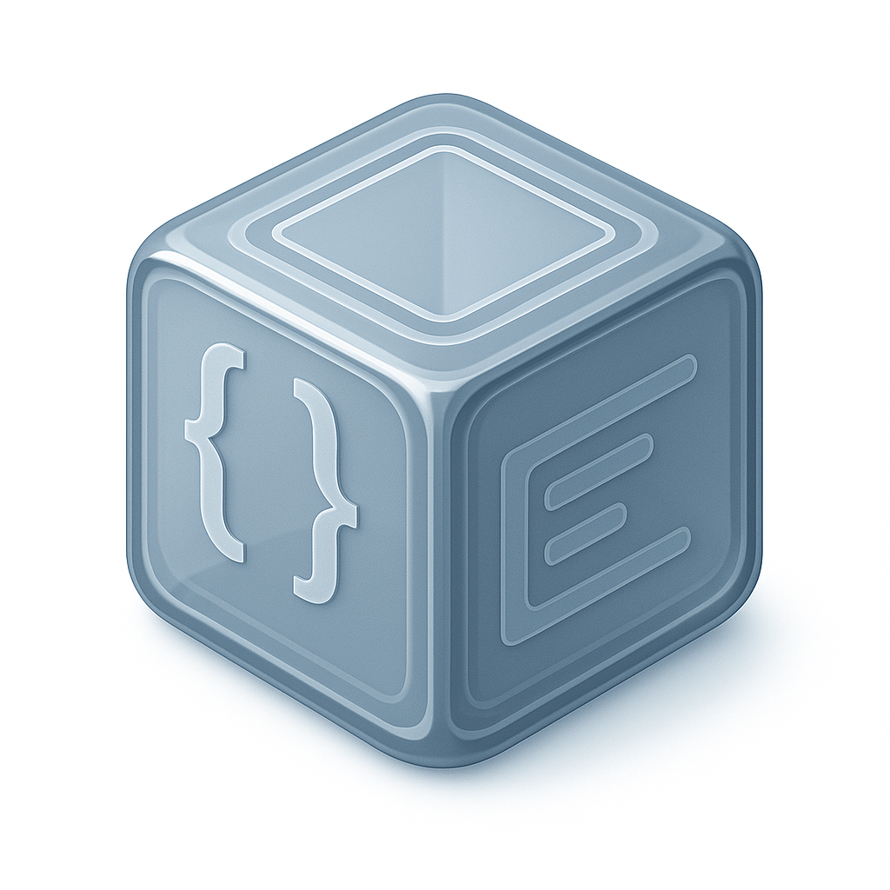
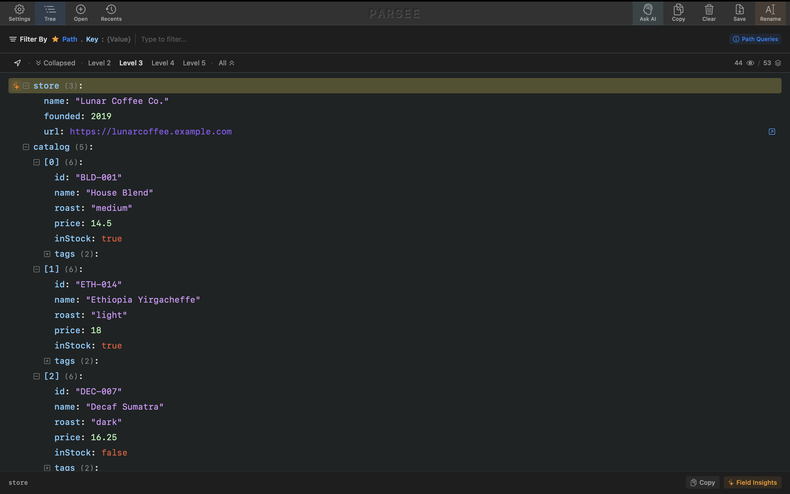
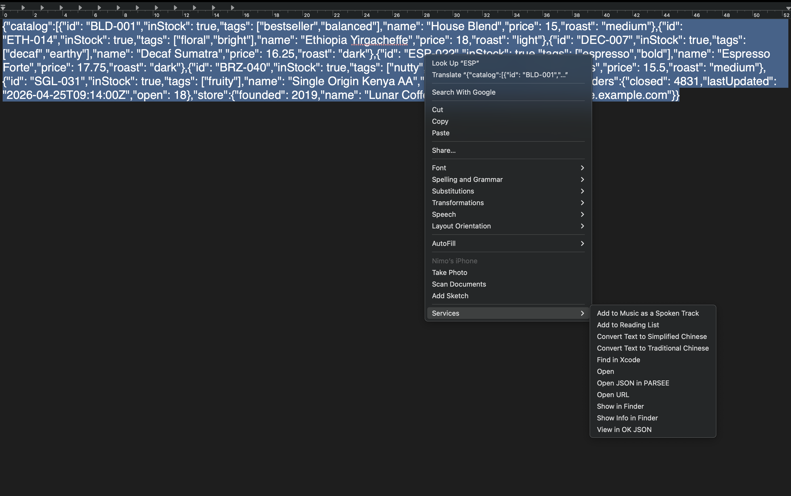
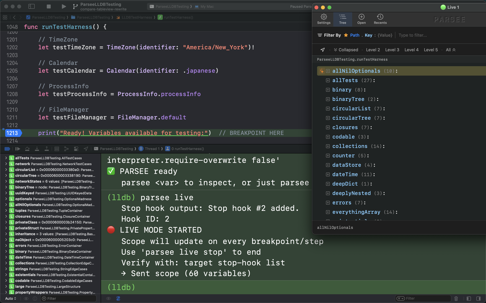
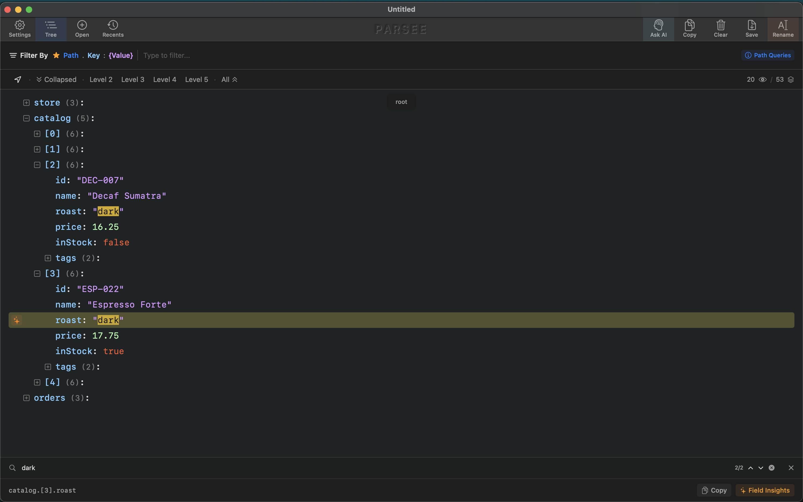
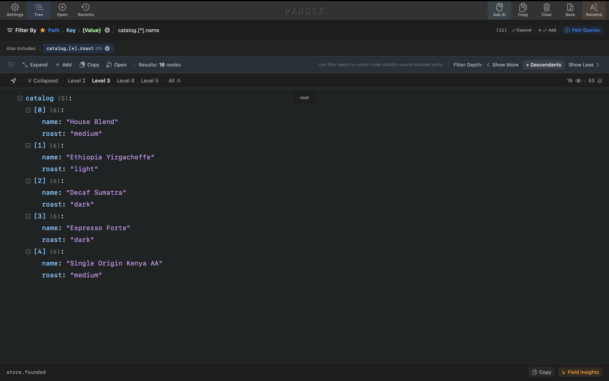
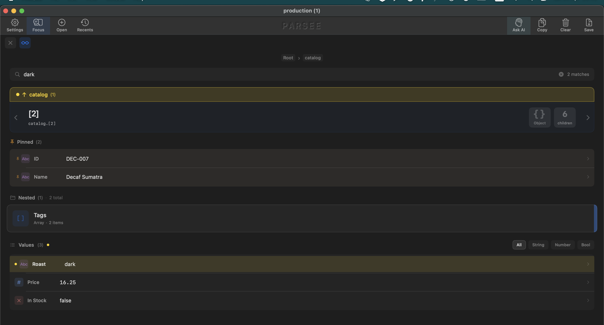
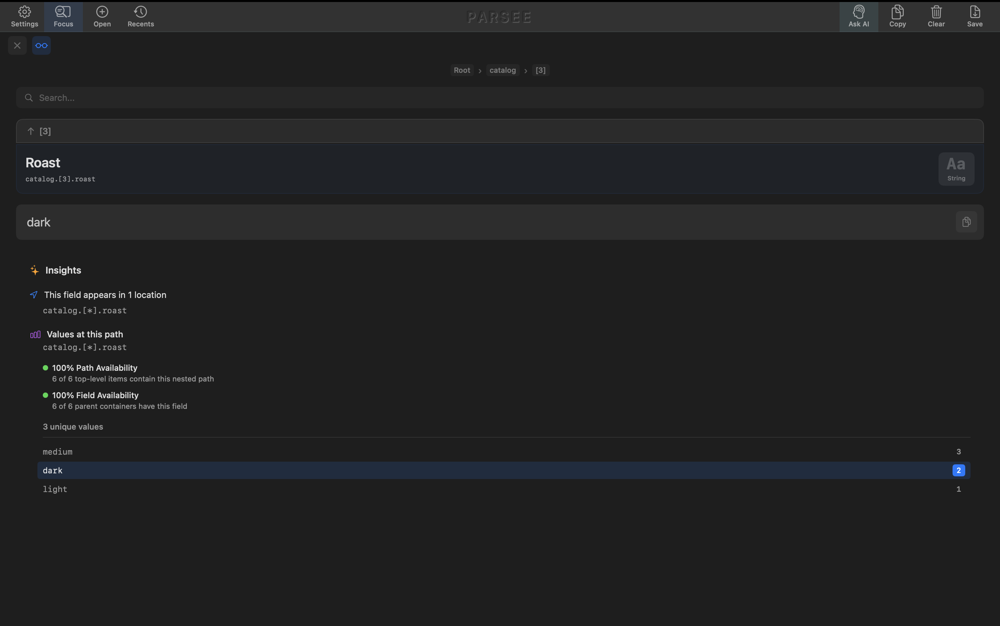
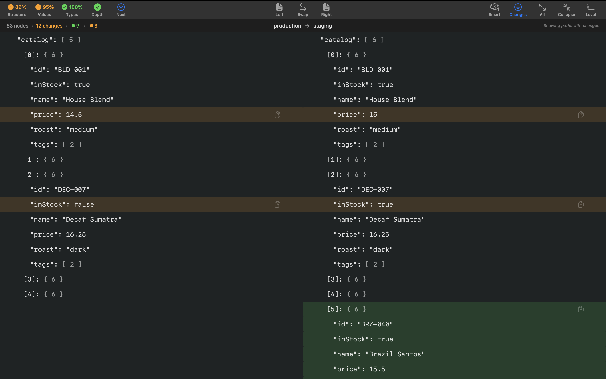
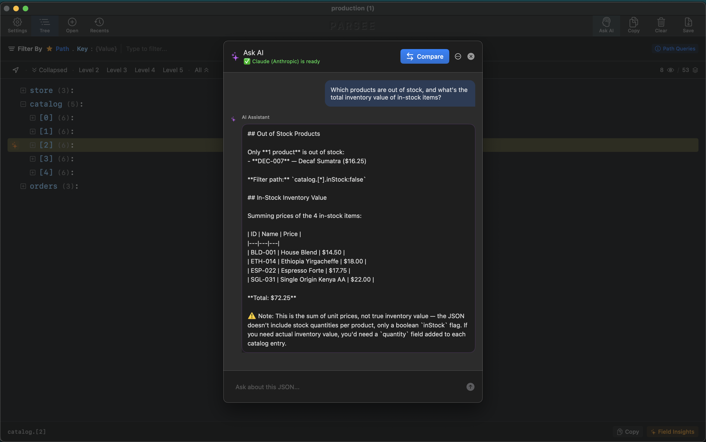

Parsee
Parse. See. Understand.
Free 30-day trial


Parse. See. Understand.
Free 30-day trial

Files, paste, URLs, Xcode — all one shortcut away.


Parsee meets your JSON wherever it shows up.
System-wide hotkey · paste · drag-drop · fetch from URL · right-click any text in any app · default opener for .json files

An optional power feature for the Xcode crowd. Pause at a breakpoint, type one command, and any variable opens in Parsee.
parsee <var> · parsee scope · parsee live (auto-updates on every step)
From thousand-line JSON to the one value you care about.

Type to find. Press ⌘F to focus the field, ⌘↩ to drop the focused match into Focus Mode. Highlights persist as you navigate so you can compare matches without losing your place.

Smart path-based filters that go beyond grep. Tap any node and Parsee offers quick presets — filter by its key, value, exact path, or wildcard path — so you don't write filter strings by hand.
wildcards · index ranges · comma-separated indices · multiple filters at once · open filtered result in a new view · live tree updates

Dive into any node and see its structure without the tree decorations. Volume bars show relative sizes, type icons mark each field, and inline insights appear without leaving the view.
tappable floating breadcrumbs · auto-expand by depth · ⌘-click to open or close all siblings at once
Insights, diffs, and AI answers — all in one place.

Tap the insights button on any node and Parsee opens a structured analysis: field availability, unique values, value counts, distributions. All of it as readable JSON.

Drop two JSONs side by side and Parsee shows exactly what changed: added, removed, modified. Works on huge files instantly.

Ask questions about your data in plain English — without leaving Parsee or pasting into another tab. Filter first to narrow the focus, or ask the whole file at once.
I'm Nimrod Bar. I've led iOS teams for 8+ years.
Parsee is the tool I wished existed.
What would you want next? Missing features, bugs, ideas — I read every email.